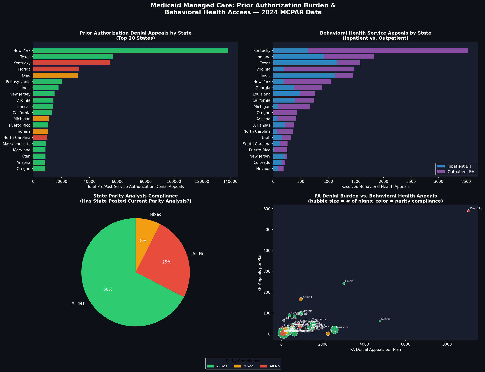

Every year, millions of Americans seek mental health and substance use treatment through Medicaid managed care. And every year, a significant portion of them hit the same wall: a prior authorization denial. Before a psychiatrist can prescribe, before a patient can be admitted, before treatment can begin, an insurance plan's algorithm or administrator says no. The patient or provider can appeal. Many do. But the appeal takes time, and in behavioral health, time is the difference between stability and crisis.
This analysis examines 2024 Medicaid Managed Care Program Annual Report data across 46 states to ask a simple question: where is this burden concentrated, and does it correlate with how seriously states are taking their legal obligations under mental health parity law?
The answer is uncomfortable. The states carrying the heaviest prior authorization denial burden are disproportionately the same states failing to meet basic parity compliance requirements, meaning patients in those states are fighting harder for care that the law already says they're entitled to.
What the Data Shows
The 2024 MCPAR dataset covers 46 states and includes plan-level reporting on prior authorization volumes, denial appeal rates, behavioral health service appeals and grievances, and parity compliance status. Three patterns stand out.
First, the prior authorization burden is massive and uneven. New York recorded over 138,000 prior authorization denial appeals in a single reporting year. Texas exceeded 56,000. Florida and Ohio each crossed 30,000. These are not edge cases. They represent hundreds of thousands of patients and providers spending time and resources fighting decisions that should never have been made in the first place.
Second, behavioral health appeals tell a parallel story. Kentucky recorded over 3,500 behavioral health service appeals, the highest in the dataset, while simultaneously being one of the states fully out of compliance on parity analysis requirements. Indiana, Virginia, Illinois, and Texas round out the top five for behavioral health appeals, each carrying thousands of unresolved disputes over mental health and substance use care.
Third, parity compliance is inconsistent at best. Federal law requires states to conduct and publish regular analyses confirming that their Medicaid managed care programs treat behavioral health benefits no less favorably than medical benefits. Roughly a third of programs in this dataset had not posted a current parity analysis. Florida, North Carolina, Kentucky, Iowa, Idaho, Nevada, and Wisconsin were among the states with programs fully out of compliance, meaning patients in those states have less visibility into whether their coverage is even legal.

Why This Matters
Prior authorization was designed as a cost control tool. The idea is straightforward: require clinical justification before approving expensive or potentially unnecessary services, and you reduce waste. In theory, it is a reasonable mechanism.
In practice, for behavioral health, it does not work that way.
Mental health and substance use treatment operates on a different timeline than most medical care. A patient in psychiatric crisis cannot wait three days for an expedited review. A person in early recovery cannot pause treatment while a plan decides whether their residential stay is medically necessary. The administrative burden of prior authorization, the paperwork, the phone calls, the appeals, falls on providers who are already stretched thin and patients who are already vulnerable. When a denial comes, many patients simply do not pursue the appeal. They go without care.
The states carrying the heaviest prior authorization denial burden are disproportionately the same states failing to meet basic parity compliance requirements.
The data reflects this. States with the heaviest prior authorization denial burdens also show the highest behavioral health appeal volumes, meaning patients and providers are fighting back, but only after care has already been delayed or denied. And in states where parity compliance is weak, there is no independent check on whether those denials are even legal.
This is not an abstraction. It is a structural failure that concentrates harm on the people least equipped to absorb it: low-income patients, people with serious mental illness, and those navigating substance use recovery, in the states least accountable for fixing it.
Why This Should Concern Policymakers Now
This analysis documents what is already happening in Medicaid managed care. The CMS WISeR model, launched in January 2026, proposes to bring AI-driven prior authorization into traditional Medicare, the same mechanism, applied to a new population. The companies administering WISeR are paid a percentage of savings generated through their review decisions. That incentive structure does not reward accuracy. It rewards denial.
The behavioral health access crisis documented here did not emerge overnight. It was built gradually, through coverage design decisions, compliance gaps, and algorithmic tools that optimize for cost rather than care. Scaling that model into Medicare, without addressing the incentive problem, risks repeating the same pattern for a different population.
The Stop Deadly Denials Act, introduced by Representatives Jayapal and Khanna in April 2026, would block WISeR and prohibit CMS from testing prior authorization models that use AI-driven denials without physician review. The evidence from Medicaid managed care suggests that prohibition is not only reasonable. It is necessary.